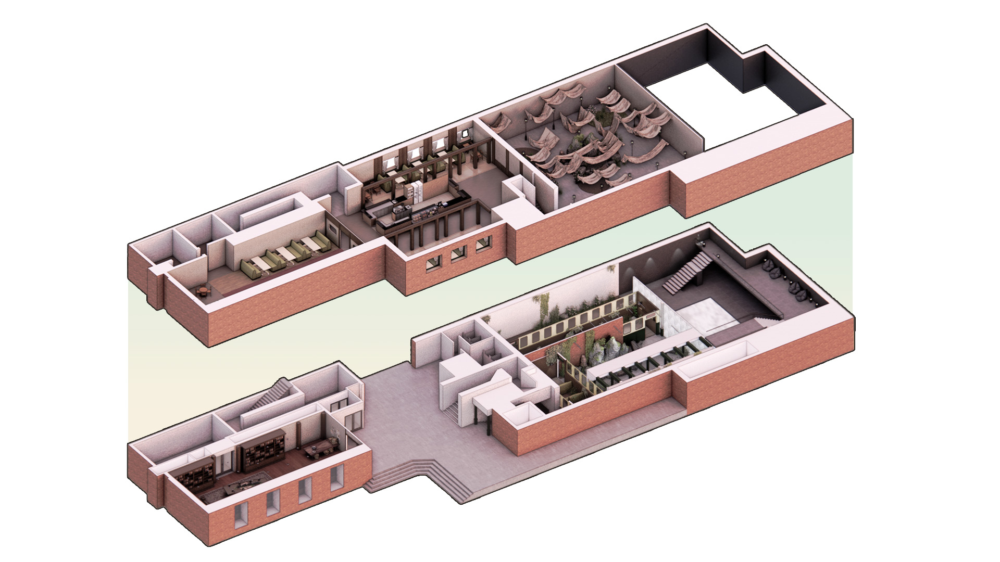
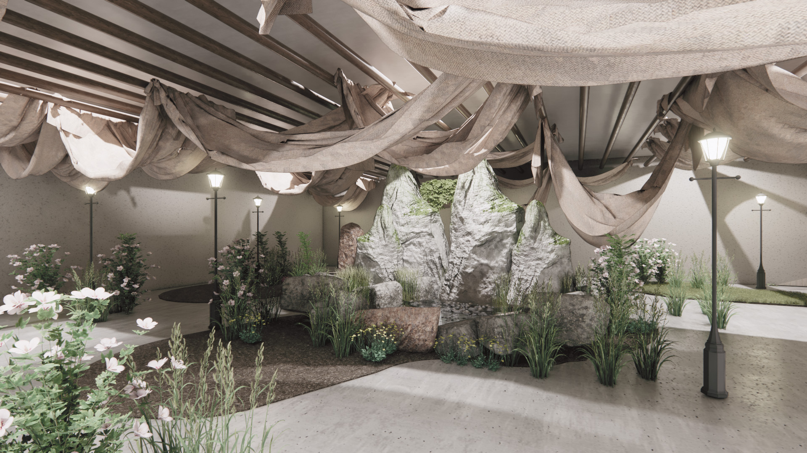

Sonic Spectrum
"자연과 사회의 소리를 시각적으로 표현한 체험형 전시 공간"
우울증으로 지친 현대인에게 소리의 파동을 통한 치유의 여정을 제안합니다.
Perspective : 불시착한 열차와 자연이 뒤섞인 공간
전시 공간의 앰비언트 사운드 (Ambient Sound)
Background & Problem
2024년 기준 우울증 환자는 2020년 대비 약 32.9% 급증하며 가파른 증가세를 보이고 있습니다. 특히 학업과 취업난을 겪는 2030 청년 세대의 정신 건강 문제가 대두되고 있습니다.
연구에 따르면 새소리, 물 흐르는 소리 등 자연의 소리(ASMR)는 스트레스 호르몬을 감소시키고 심리적 안정을 찾는 데 탁월한 효과가 있습니다. 이에 착안하여 약물 치료가 아닌, 시각과 청각을 결합한 보완재로서의 전시 공간을 기획했습니다.
Design Concept
"불시착한 시공간 열차 (The Crashed Train in Space-time)"
현대인의 우울증을 '시공간을 여행하다 불시착한 열차'에 은유했습니다.
파괴된 인공물(열차)과 무질서한 자연이 뒤섞인 불완전한 공간 속에서,
관람객은 소리와 빛을 연결하는 매개체가 되어 치유와 재탄생의 과정을 체험하게 됩니다.
Concept Image : 파괴된 과거에서 정화로 이어지는 서사적 여정
Space Program & Isometric
1F : Awareness (자각)
자연물의 소리와 인공물의 소리를 동시에 경험하며 불협화음 속에서 내면을 마주하는 공간
1층과 2층을 연결하는 전이 공간. 높은 곳에서 떨어지는 폭포 소리와 영상물을 통해 정화의 단계로 진입
2F : Healing (치유)
전시의 클라이막스. 천이 바람에 흔들리는 소리와 물소리가 공명하며 완전한 조화를 이루는 치유의 공간
전시의 여운을 즐기는 휴식 공간 및 도서관 형태의 '기억 아카이브' (MD Store)
Perspective Details
Display Rhythm : 폭포 영상과 소리가 쏟아지는 전이 공간 (Media Wall)
Display Harmony : 자연의 소리와 빛이 조화를 이루는 공간

Cafeteria : 편안한 우드 톤과 식재가 어우러진 휴식 공간